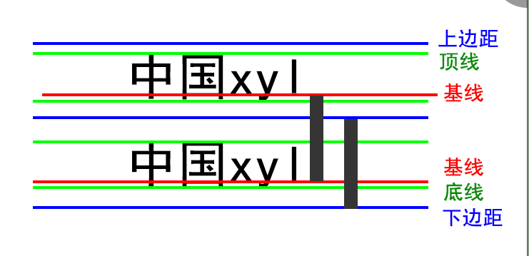

在设计Python语言时，如果面临多种选择，Python开发者一般会拒绝花俏的语法，而选择明确的没有或者很少有歧义的语法。由于这种设计观念的差异，Python源代码通常被认为比Perl具备更好的可读性，并且能够支撑大规模的软件开发。这些准则被称为Python格言。在Python解释器内运行import this可以获得完整的列表。 Python开发人员尽量避开不成熟或者不重要的优化。一些针对非重要部位的加快运行速度的补丁通常不会被合并到Python内。
在设计Python语言时，如果面临多种选择，Python开发者一般会拒绝花俏的语法，而选择明确的没有或者很少有歧义的语法。由于这种设计观念的差异，Python源代码通常被认为比Perl具备更好的可读性，并且能够支撑大规模的软件开发。这些准则被称为Python格言。在Python解释器内运行import this可以获得完整的列表。 Python开发人员尽量避开不成熟或者不重要的优化。一些针对非重要部位的加快运行速度的补丁通常不会被合并到Python内。
在设计Python语言时，如果面临多种选择，Python开发者一般会拒绝花俏的语法，而选择明确的没有或者很少有歧义的语法。由于这种设计观念的差异，Python源代码通常被认为比Perl具备更好的可读性，并且能够支撑大规模的软件开发。这些准则被称为Python格言。在Python解释器内运行import this可以获得完整的列表。 Python开发人员尽量避开不成熟或者不重要的优化。一些针对非重要部位的加快运行速度的补丁通常不会被合并到Python内。
在设计Python语言时，如果面临多种选择，Python开发者一般会拒绝花俏的语法，而选择明确的没有或者很少有歧义的语法。由于这种设计观念的差异，Python源代码通常被认为比Perl具备更好的可读性，并且能够支撑大规模的软件开发。这些准则被称为Python格言。在Python解释器内运行import this可以获得完整的列表。 Python开发人员尽量避开不成熟或者不重要的优化。一些针对非重要部位的加快运行速度的补丁通常不会被合并到Python内。
在设计Python语言时，如果面临多种选择，Python开发者一般会拒绝花俏的语法，而选择明确的没有或者很少有歧义的语法。由于这种设计观念的差异，Python源代码通常被认为比Perl具备更好的可读性，并且能够支撑大规模的软件开发。这些准则被称为Python格言。在Python解释器内运行import this可以获得完整的列表。 Python开发人员尽量避开不成熟或者不重要的优化。一些针对非重要部位的加快运行速度的补丁通常不会被合并到Python内。
在设计Python语言时，如果面临多种选择，Python开发者一般会拒绝花俏的语法，而选择明确的没有或者很少有歧义的语法。由于这种设计观念的差异，Python源代码通常被认为比Perl具备更好的可读性，并且能够支撑大规模的软件开发。这些准则被称为Python格言。在Python解释器内运行import this可以获得完整的列表。 Python开发人员尽量避开不成熟或者不重要的优化。一些针对非重要部位的加快运行速度的补丁通常不会被合并到Python内。
行高被默认值覆盖--行高被默认值覆盖--行高被默认值覆盖--行高被默认值覆盖--行高被默认值覆盖--行高被默认值覆盖--行高被默认值覆盖--行高被默认值覆盖--行高被默认值覆盖--行高被默认值覆盖
行高被默认值覆盖--行高被默认值覆盖--行高被默认值覆盖--行高被默认值覆盖--行高被默认值覆盖--行高被默认值覆盖--行高被默认值覆盖--行高被默认值覆盖--行高被默认值覆盖--行高被默认值覆盖
单行垂直居中--单行垂直居中
---------------------------------------------有待细致分析,思路: 所有元素(不仅仅是文字)都处于对应的生成框的中,且元素在 当前框!当前框!当前框!当前框!当前框!当前框! 中的垂直对齐方式为垂直居中---------------------------------------------
2.原理:
1.所有元素都处于相应元素框内,display可以改变元素生成框的类型
1.块元素生成框前后自带换行符,宽度为auto,高度有内容撑起
2.行内块元素生成框宽高均由内容撑开
3.内联元素生成框宽高均由内容撑开
2.元素的内容在当前框中的垂直对齐方式均为居中
3.为什么多行元素有多行内容时不能使用此方法实现垂直居中?
1.因为行高指的是兄弟元素间基线间的距离 = 行高 = 元素生成框的高 - 内容高 = 行间距 = 2倍半行间距
---------------------------------------------有待细致分析,思路: 所有元素(不仅仅是文字)都处于对应的生成框的中,且元素在 当前框!当前框!当前框!当前框!当前框!当前框! 中的垂直对齐方式为垂直居中---------------------------------------------
